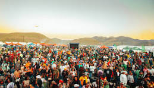
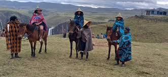
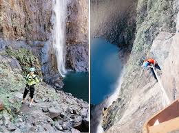

The Maletsunyane Braai Festival was created to celebrate the rich cultural heritage and natural beauty of Lesotho. Over the years, it has grown into a popular tourism event that attracts both local and international visitors. The festival highlights music, outdoor adventure activities and also provides a platform for showcasing Basotho culture in a modern and engaging way.


The significance of the festival lies in its ability to bring people together while promoting tourism development. It encourages visitors to explore Semonkong and its surrounding attractions, including the famous Maletsunyane Falls. The event supports cultural exchange and helps preserve local traditions. In addition, it creates employment opportunities and boosts the local economy.